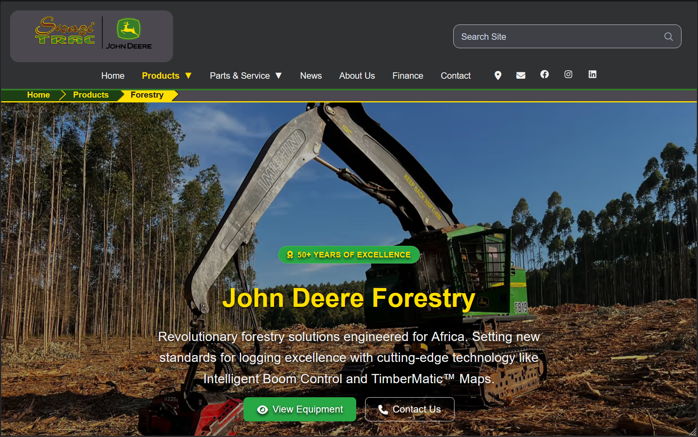

Hayden Austin
Full-Stack Software Engineer | AI/ML Specialist
Versatile software engineer with expertise spanning multiple programming paradigms and technologies. Specializing in AI/ML applications, modern web development, and scalable backend systems. Currently pursuing Bachelor's degree in Software Engineering at Belgium Campus ITversity with hands-on experience in production applications serving real-world clients.
By the Numbers
A quick view of the experience I bring to each engagement.
Core Expertise
Where I deliver the most leverage for teams and clients.
Current Focus
- Productizing AI copilots and retrieval workflows that plug into client knowledge bases.
- Engineering resilient cloud platforms with React, TypeScript/JS, C#, and data-first observability.
- Elevating developer experience with automation, documentation, and creativity.
- Elevating client experience through tailored solutions, easy to use interfaces, and automation.
What Drives Me
I'm passionate about building interesting systems that solve real-world problems. From training custom LLMs to creating engaging and easy-to-use web applications, I thrive on the intersection of AI research and practical software engineering. Always exploring cutting-edge technologies, optimization techniques, and new programming paradigms to stay at the forefront of software development.
When I'm not coding, you'll find me diving deep into literature, experimenting with new frameworks and tools, or in the garden tending my plants, while my computer is running in the background 24/7 training models (RIP GPU). I believe in continuous learning and love sharing knowledge with the developer community.
Technical Skills Overview
A comprehensive breakdown of my technical capabilities across multiple domains. Each skill represents hands-on experience in real-world projects.
Select a perk
Choose a node in the skill tree to see details and rewards.
Professional Journey
My journey in software development spans academic excellence, hands-on freelance work, and community-driven projects. Each experience has shaped my technical expertise and problem-solving abilities.
Bachelor of Software Engineering
Belgium Campus ITversity
Comprehensive software engineering degree program focusing on modern development practices, AI/ML applications, and full-stack web development. Currently in final year with strong academic performance and practical project experience.
Core Curriculum
C#, Java, Python, JavaScript, C++ - Object-oriented and functional paradigms
Neural networks, deep learning, natural language processing, computer vision
Full-stack development with React, Node.js, Next.js, and modern frameworks
Advanced problem solving, optimization, and algorithmic thinking
Design patterns, SOLID principles, microservices, and scalable systems
Key Achievements
- Collaborated on team projects using Agile methodologies
- Published internal research on computing infrastructure, and virtual machine usage within university level usages
- Expected graduation: December 2025
Freelance Full-Stack Developer
Self-Employed
Delivering custom web solutions for clients across various industries including agriculture, e-commerce, and professional services. Specializing in React/Next.js applications with Firebase backends.
Notable Projects & Clients
Built responsive website for Swazitrac showcasing products and services
React, Firebase, Real-time Database
Developed SEO-optimized online store with product management CMS
Next.js, Firebase Auth, SSR/SSG
Created stunning portfolio with project galleries and CMS
Next.js, Firestore, Image Optimization
Key Deliverables
- Average 95+ Lighthouse performance scores
- 100% mobile-responsive designs
- Secure authentication and data protection
- Fast deployment pipelines and CI/CD
- SEO optimization for organic reach
- Ongoing maintenance and support
Gaming Server Developer & Administrator
Minecraft Community Projects
Founded and managed successful gaming servers serving 10000+ unique players. Led development teams, created custom plugins, and maintained robust server infrastructure.
Technical Responsibilities
Custom gameplay mechanics, economy systems, and administrative tools
Ubuntu/Debian server setup, optimization, monitoring, and security
JVM tuning, database optimization, and network configuration
Managed teams of 5-10 developers, moderators, and administrators
Achievements & Impact
- 🎮 Served 10,000+ unique players across server lifetime
- 📊 Maintained 99.5% uptime with proactive monitoring
- 💰 Generated sustainable revenue through in-game economy
- 🛡️ Implemented robust anti-cheat and security measures
- 🌍 Built engaged international community
- 📝 Created comprehensive documentation for team
AI/ML Research & Development
Personal Projects & Open Source
Dedicated to advancing AI/ML capabilities through personal research projects, focusing on efficient training methods and practical personal deployment of language models.
Research Focus Areas
Building efficient training pipelines with JAX/Flax for local inference
Quantization, pruning, and distillation for inference speed
MLOps workflows for research and model versioning
Tools & Technologies
- 🐍 Python: JAX, Flax, PyTorch, Transformers
- 📦 Ollama for local LLM inference
- 📊 Weights & Biases for experiment tracking
- 💾 Efficient data pipelines with HuggingFace Datasets
- 🔧 Custom tokenizers and training loops
Featured Projects

Mind_Core
Personal ML custom LLM build
Python • Ollama • Flax • Jax • Tensorflow
Agricultural Website
Website for showcasing agricultural products and services
React • Firebase
Jewelry Shop
Online store for the advertisement of jewelry products
Next.js • React • FirebasePortfolio for an Architect
Website for showcasing architectural designs and projects
Next.js • React • Firebase
Custom Game Engine Injection
Lightweight Injection into game engine in C++, for the purpose of adding code mods, and adding assets.
C++ • Lua
Automation Suite
Python tools for productivity automation, data extraction, data processing, data visualization
Python • Selenium • Puppeteer
Portfolio Site
This portfolio is this website.
HTML5 • CSS3Curriculum Vitae
Browse the full CV directly in the viewer below. Use the download button for an offline copy if needed.
Having trouble with the inline viewer? Open the PDF in a new tab.